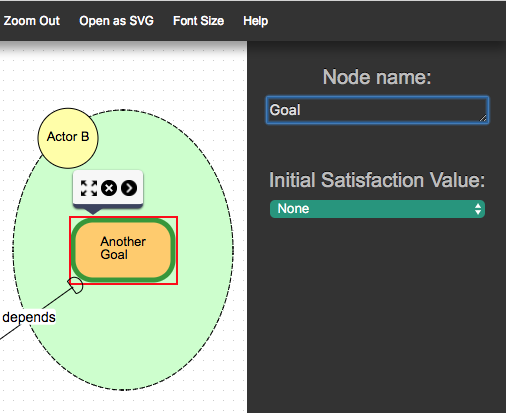
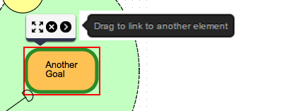
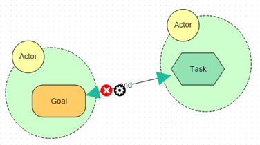
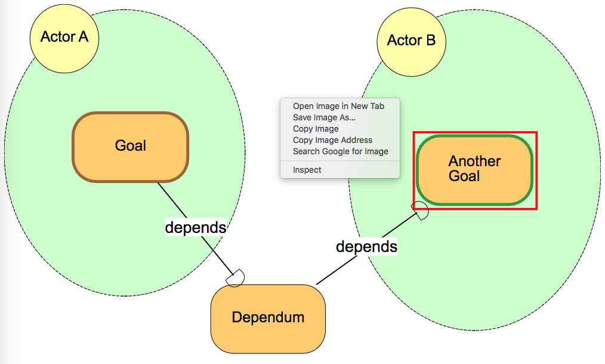

Leaf2.0 allows you to draw iStar 2.0 models using the shapes from the Palette
on the left.
How to draw an actor or element
Click the desired element or actor from the left palette and drag in onto the canvas. Release mouse.
Click on the element you want to rename on the canvas. On the top right of the screen appears a Node Name box, initially with the general name, e.g., Task. Replace this text with the desired name then click back on the canvas.
How to draw a link
Click on the element which will be the source of the link. A black arrow appears on the right side of the element. Click and drag this arrow to another shape, the destination of the link. When you are close enough to the other element, a red box will appear around it. Release the mouse button and the link is connected from source to target.
How to pick a link type
By default, all decomposition links are And-decomposition. To change a link type, hover over a link. A black gear icon appears. Click on the icon. Now in the top right where you have previously been able to name an element the Link type drop-down box appears. Pick the type of link you want from the drop-down box.
Hint: if the gear symbol is too small or overlaps with other icons, try moving the element slightly.
How to save/load a file
Use the save and load buttons on the top of the screen. They prompt you for a file name and location. By default the file extension added is .json
Other features
Zoom: using the gray Zoom In and Zoom Out buttons.
Font Size: can Increase, Decrease, or use Default.
Exporting Model Image
Click Open as SVG from the top menu. A new tab will open. Either take a screenshot or right-click 'Save Image As...' and save the file on your computer.
